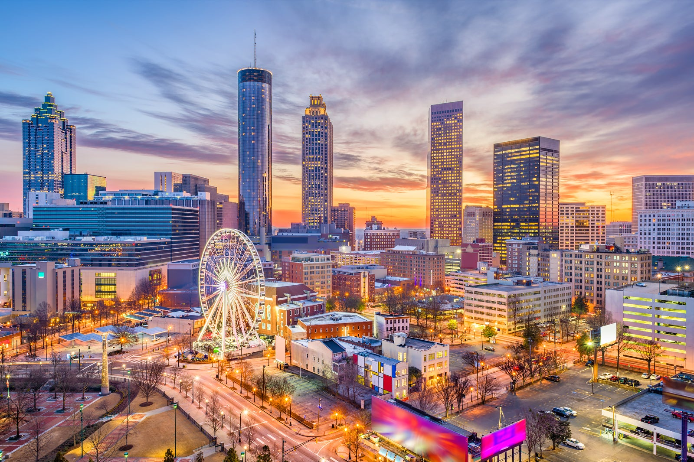
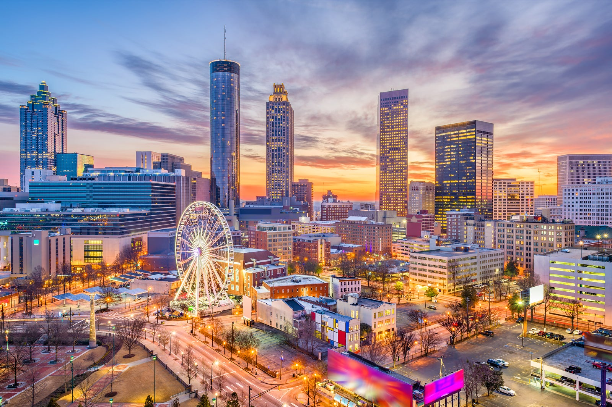

Places
Yellowstone


Geographical Location: North America
Yellowstone is the first national park in the United States. It covers over 2.2 million acres, and provides an opportunity to see wildlife and explore geothermal areas. In fact, Yellowstone contains about half the world's active geysers.
These unique opportunities also bring out a lot of bad decisions among the tourists. Every year visitors injure themselves or the wildlife by getting close to the animals. You can see examples of people making bad decisions by visiting Yellowstone National Park: Invasion of the Idiots, Tourons of Yellowstone, or Cowboy State Daily.
Photo Gallery


NEW YORK


Geographical Location: North America
New York is a big city in the United States. It's known for its tall buildings and lots of people. People come from all over to see famous places like Times Square and Central Park. In New York, you can find all kinds of food, and there are taxis everywhere to get you around the busy streets. It's a place that never seems to sleep, with lights and excitement all day and night.
The city has a lot of different neighborhoods, like Chinatown and Harlem, where you can experience different cultures. And don't forget about the Statue of Liberty; it's a symbol of freedom and is a famous sight in New York Harbor. Whether you're into shopping, eating, or just exploring, New York City has something for everyone.
Photo Gallery


Great Smoky Mountains

Geographical Location: North America
The Great Smoky Mountains is a national park in the eastern United States. It's a big area with lots of trees and mountains, and it's famous for its foggy mornings that make it look smoky. People like to visit the park to go hiking and see the pretty views. There are also streams and waterfalls where you can go fishing or just relax by the water. It's a nice place to be in nature and see animals like bears and deer.
One special thing about the Great Smoky Mountains is that it's free to enter. That means you don't have to pay to enjoy the beautiful outdoors. Many people visit during the fall to see the colorful leaves on the trees, but it's a nice place to visit any time of year if you like being in the mountains and seeing nature up close.
Photo Gallery

Singapore

Geographical Location: Asia
Singapore is a small country in Asia. It's known for being very clean and safe. There are tall buildings and a big city with lots of shops and restaurants. People in Singapore like to eat all kinds of food, from noodles to seafood.
One famous place in Singapore is the Merlion, a statue with the head of a lion and the body of a fish. It's a symbol of the country. Singapore is also close to the ocean, so you can go to the beach and enjoy the warm weather. It's a nice place to visit if you want to experience a mix of modern city life and a bit of nature.
Photo Gallery


Atlanta
 

Geographical Location: North America
Atlanta is a city in the southern United States. It's a big and bustling place with lots of people and cars. You can find all kinds of things to do in Atlanta, like visiting museums, going to sports games, or eating at delicious restaurants. It's known for its warm weather, especially in the summertime.
One of the famous places in Atlanta is the Georgia Aquarium, where you can see all sorts of sea creatures. Atlanta is also home to the Martin Luther King Jr. National Historic Site, where you can learn about the civil rights movement. Whether you're into history, sports, or just exploring a big city, Atlanta has something for everyone.
Photo Gallery
Orlando
Geographical Location: North America
Orlando is a city in the state of Florida, USA. It's a popular destination for tourists because of its many theme parks and attractions. The most famous of these is Walt Disney World, where people from all over the world come to meet their favorite Disney characters and enjoy rides and shows. Orlando also has Universal Studios, SeaWorld, and many other fun places to visit.
Apart from the theme parks, Orlando has a warm and sunny climate, making it a great place for outdoor activities like golfing and boating. The city is known for its friendly atmosphere and is a hub for family vacations and entertainment.